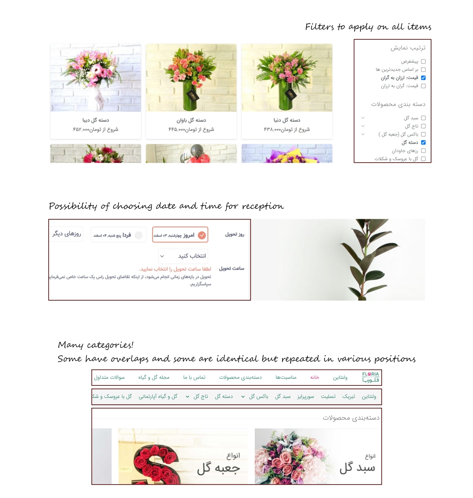

Design a bouquet with your own taste and the help of AI!

Choose a bouquet fast and simple with the help of filters!

Design a bouquet with your own taste and the help of AI!
Choose a bouquet fast and simple with the help of filters!
Your Bouquet is a website for anyone who wants to show their love and care by gifting a flower bouquet. Designing a bouquet, choosing a bouquet with simplified filters, and sending the order directly to the receivers are the main features of this website.
The online experience of buying a flower bouquet is different from the offline experience, as customers are not able to choose the characteristics of their bouquet and have to find a match from available options. Choosing a suitable match can be frustrating and time taking as a result of the Hick's law. Sending a bouquet directly to the receiver may not be possible.
Designing a responsive website for a flower bouquet shop, where users can either choose the characteristics of their own bouquets or choose a bouquet from pre-designed options with the help of simple and easy-to-use filters. The order can be sent to the user or to the user, or to the receiver directly. The process is simple and fast in all cases.
I conducted interviews and created empathy maps, personas, user stories, and user journey maps to identify and understand the needs, experiences, and perspectives of the users I am designing for. My goal was to understand if they already order flower bouquets online or not, and why. I also Wanted to know what they like and do not like about online and offline experience of buying a bouquet, in addition to the options they would like to have.
Some pain points mentioned by the users were the complexity of ordering a bouquet online, not having the option to choose the characteristics of the bouquet when ordering online, not being able to send a bouquet directly to a loved one, and not having enough time to buy a bouquet offline.
Aggregated empathy maps
Hana is a busy student and librarian who needs to order bouquets based on her own taste online because she wants to save some time while also having a similar experience to buying the bouquet offline.
Joe is a busy engineer who needs to order bouquets simply and fast and send them directly to the receivers because he wants to show that he cares but lives far from his loved ones and does not have much time to think about every detail.
User journey maps

The goal of this competitive audit is to compare the process of ordering a flower bouquet of each competitive website and identifying their similar or unique options.
I understood that websites in and out of Iran have similar processes and options, with some differences in details like identification, payment, and administrations. As the target users are in Iran, I will focus on websites in Iran as the main competitors. Most of the websites in Iran are for ordering any kinds of flowers and not just bouquets, and the option of designing a bouquet is also not available. Therefore, all websites will be indirect competitors and I will focus on the process of ordering a bouquet by browsing available options.
I have chosen five websites that are the top search results for various related keywords. These websites are: golestan.com, vipshop.flowers, golbama.com, floriaflower.com, and anguor.com.
Most of the websites had a responsive format and images had a proper quality. Providing the option of choosing the reception time, guaranteeing the quality and freshness of flowers, special offers, strong customer support, and the possibility of sending orders out of Iran are also some strengths of these websites. In all websites, items are categorized based on types of products, types of flowers, occasions, etc. However, the categories usually have overlaps and choosing the best one for finding a match with what the user wants may be confusing. In addition, the huge number of options may frustrate users who do not have much time. In one of the websites, in addition to categories, filters are provided. Providing the user with the option to first see all the items, and then remove irrelevant items by filters seems to be a simpler and faster approach.
Providing an option for customizing designs, providing a fast and simple path for finding the best bouquet, making the website fully responsive, and maintaining the order placement procedure simple while still allowing the user to have options like choosing various reception information are some identified opportunities.
Parts of the competitive audit process
Some observations in competitive audit
I used design thinking activities, like How Might We and Crazy Eights, to come up with design solutions for the problems that users are experiencing.
Some questions I tried to answer are: How might we help the user have an online experience of ordering a bouquet that is similar to the offline experience? (In iran, customers can choose the type, color, and number of flowers. Then, the florist chooses other details and assembles the bouquet). How might we make the design process of a bouquet fun and engaging? How might we help the users choose the bouquets they want fast and simple? many other questions were made for ideation during this step and next steps. Then, the Crazy Eights exercise was completed for finding ideas and solutions.
From here, it is assumed that an AI model which can produce an image of a bouquet based on the type, color, and number of flowers of that bouquet. The use of AI models can be wider, but it is limited to this model in this project to amp up the good while also keeping a border for the project.
Also, a sitemap is created to show how pages are prioritized, linked, and labeled to make a logical and organized paths between information before the beginning of the design procedure.
Sitemap
Based on the information and ideas collected in the previous steps, paper wireframes for a responsive website are created. For important pages, at least four sketches are created, then best parts are chosen and starred to be used in a final version.
Based on the paper wireframes, digital wireframes are created using Adobe XD. During this process, Gestalt Principles such as similarity, proximity, and common region have been considered.
A low-fidelity prototype is created using the digital frames so that a usability study can be done for fixing the issues with less price before moving to the mockups. Two main flows of the website are: 1. Using filters, choosing a bouquet, completing the order and 2. Designing a bouquet and completing the order.
Filter, Choose, Order

Design, Order

The goal of this round of usability test was to see if users can complete both core tasks of the Your Bouquet website, and if anything was difficult to use or understand. Some research questions were: Can the users understand how filters work? Can users complete an order with specific filters? Can users understand how design works? Can users complete the process of designing and ordering a bouquet? Drop-off rates and conversion rates were the main KPIs of this test. The test was done as an unmoderated usability study and took around 20 minutes for each user. Participants were four female and one male between the ages of 20 to 60.
An affinity map containing grouped data from all usability study participants is created. Data is grouped based on flows. Based on observation, themes and insights have been identified and an action plan has been made.
> Based on the theme that users find the sender and receiver form confusing,
an insight is to provide the form on one page.
> Based on the theme that users cannot find filters like type of flowers,
an insight is to change the states of chosen and not chosen filters.
> Based on the theme that users think the design options are too small,
an insight is to make the buttons bigger.
The affinity map of first round of usability studies
Based on the action plan, iterations are made on designs, elements of visual design are added, and mockups are created for the responsive website. Similar to the last step, the high-fidelity prototype is made for laptop and phone. Then, a second round of usability study is done and the next round of iterations is done based on the findings.
Laptop

Phone

Some changes from the first version of digital wireframes to the present version
I had so much fun while learning many new things while working on this project. However, this project has been done for practicing design thinking, and it ends here. This design can be handed to programmers to be lunched after a few more iterations, especially for adding accessibility. This website would help users to design their own bouquet, inorder to have fun using an AI model, or to actually order the bouquet. It would also help users choose the bouquets they need simply and fast. In other words, it will help users show their love in a more interesting and less complicated way!
“The design option is so interesting. I think I would use this website even when I do not need to buy a bouquet. The AI model should work well though!"
I learned a lot during this project, but one of the most important things that I could experience was that it is really easy to be effected by a bias, or to wrongly guess about what users feel, think, or mean without even noticing. It is important to identify biases and to practice the rule of putting users center and front at any step. I could also see how users' needs can be different from each other, or in different contexts.